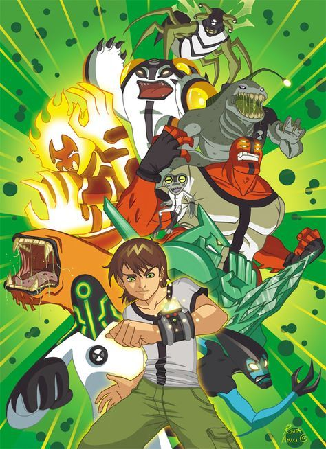

ABOUT BEN 10
"The series is about a 10-year-old boy named Ben Tennyson who gets a watch-style alien device called the "Omnitrix". Attached to his wrist, it allows him to transform into 10 different alien creatures with different abilities, allowing him to fight evil from Earth and space with his cousin Gwen and grandfather Max."
"Ben 10 And His Friends"
"BEN 10 Characteristics"
- Ben 10 is very sweet and Cute.
- Benjamin Kirby "Ben" Tennyson, commonly known as Ben 10
- Heatblast: Ben's favorite alien when he was 10 and throughout OG.
"BEN 10 FRIENDS"
Gwendolyn "Gwen" Tennyson, occasionally known as Lucky Girl, is a fictional character of the Ben 10 franchise. The paternal first cousin and best friend of title protagonist Ben Tennyson, Gwen is a core member of Ben's team who frequently aids him in his various adventures."Click these links to learn more about them".